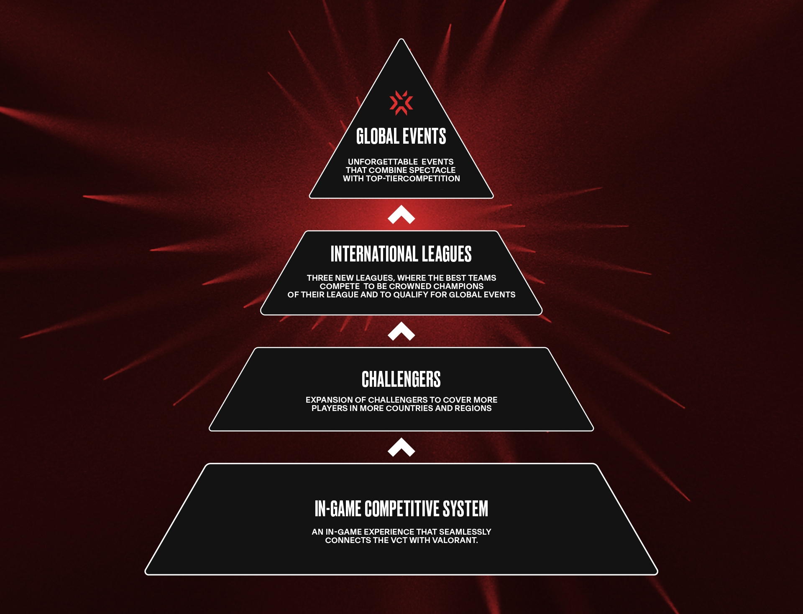
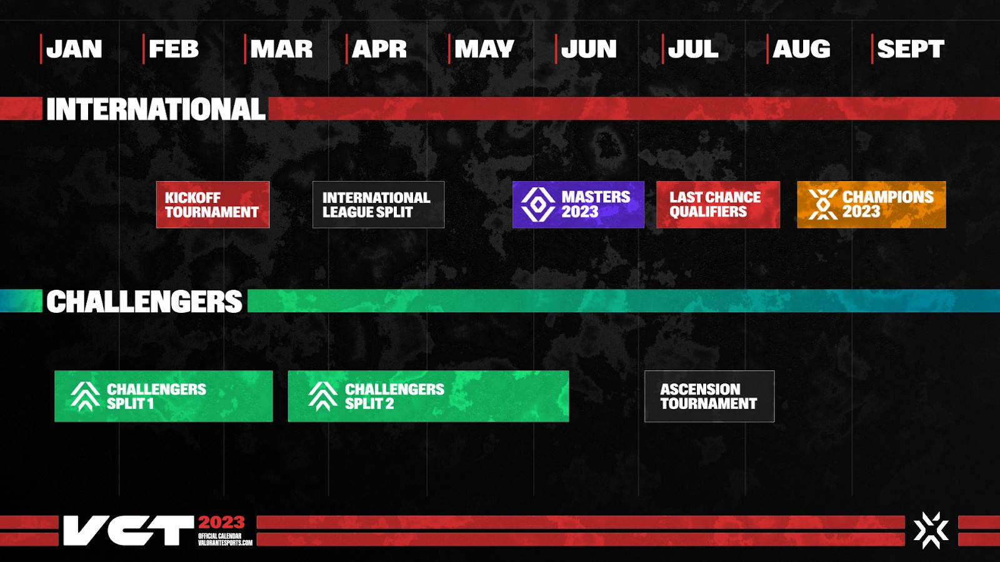

VALORANT
Pour plus de détail vous pouvez déjà observer cette vidéo explicative avant d'aller plus loin dans les détails du jeu, cette vidéo à été faite par l'équipe GentleMates puis revenir pour rentrer dans les détails
L’eSport Valorant en 2023 et sa complexité expliquée
Une fois qu’on a compris ce circuit reste plutôt simple utilisons cette pyramide et planning de la saison pour le comprendre au mieux
 On peut donc voir 2 timelines différentes. En haut les tournois internationaux et en bas les challengers les tournois régionaux et internationaux.
Evènements internationaux
VALORANT CHAMPION TOUR ou VCT
Il représente les évènements mondiaux donc le championnat du monde de Valorant il se termine par le plus grand tournois du jeu les CHAMPIONS qui ont lieu en fin d’année et titre le champion du monde. ce circuit se déroule en plusieurs parties que l'on vas maintenant expliquer:
LE LOCK IN BRAZIL
Le tournoi KICKoff de saison dans lequel 30 équipes partenaires des ligues internationales et 2 équipes invitées de Chine ont jouer au Brésil à São Paulo en février. Le vainqueur FNATIC a remporté une place supplémentaire pour sa ligue (EMEA) au Masters Tokyo.
LE SEGMENT DE LIGUE
ce circuit se divise ensuite en 3 leagues majeures + une league à part pour la Chine
o La ligue dite EMEA (Europe, Moyen-Orient et Afrique)
o La ligue Pacifique avec l’Asie et l’Océanie …
o Et la ligue America qui regroupe donc tout le continent américains (USA , Canada, Mexique …)
Les Trois ligues s'affronte parallèlement en local, une sur chaque territoire international.
Chaque ligue est composée de 10 équipes partenaires sélectionnées par Riot Games.
Les meilleures équipes de chaque région se qualifient pour les Masters et les Champions.
La Ligue des Amériques s'est jouée aux États-Unis à Los Angeles.
La Ligue EMEA s'est jouée en Allemagne à Berlin.
La Ligue du Pacifique s'est jouée en Corée du Sud à Séoul.
LES MASTERS DE TOKYO
Les 3 meilleures équipes de chaque Ligue internationale et les 2 équipes de la Ligue chinoise se sont jouées au Japon à Chiba. La Ligue EMEA a obtenu 4 places grâce à la victoire de Fnatic dans le LOCK//IN. Le vainqueur (encore FNATIC) a remporté une place supplémentaire pour son Last Chance Qualifiers aux Champions.
LAST CHANCE QUALIFIER
Les équipes qui ne sont pas en mesure de se qualifier pour les Champions via la Ligue Internationale jouent pour les dernières places au Champions. EMEA LCQ a obtenu 2 places grâce à la victoire de Fnatic au Masters de Tokyo.
CHAMPIONS
Et pour finir les champions Les 3 meilleures équipes de chaque Ligue internationale, des qualifications pour la Chine et le vainqueur de chaque qualification de la dernière chance se sont affrontées pour le titre de champion du monde aux États-Unis à Los Angeles. 3 places de la Ligue EMEA seront décidées via le classement de 4 équipes lors des masters. c'est finalement l'équipe Evil Génious qui les a remportée
Ligue Semi-Pro
On sort ensuite du circuit internationale pour entré dans la league semi-pro avec les
CHALLENGERS il y a en tout 23 ligues régionales mineures réparties sur les trois territoires internationaux
Amériques (4 régions mineures)
-Amérique du Nord
-Amérique Latine Nord
-Amérique Latine Sud
-Brésil
EMEA (9 régions mineures)
-Europe du Nord (Royaume-Uni , Pays nordiques, Irlande Irlande)
-Espagne
-France & Benelux (Belgique , Pays-Bas , Luxembourg )
-DACH (Allemagne , Autriche , Suisse)
-Turquie
-Europe de l'Est
-Italie
-Portugal
-États arabes MENA (2 sous-régions)
-CCG (Bahreïn , Koweït , Oman , Qatar , Arabie saoudite ,Émirats arabes unis ) et Irak
-Moyen-Orient Levant (Jordanie , Liban , Palestine , Syrie ) et Afrique du Nord
Pacifique (10 régions mineures)
-Asie du Sud
-Thaïlande
-Vietnam
-Malaisie et Singapour
-Corée du Sud
-Japon
-Hong Kong et Taïwan
-Philippines
-Indonésie
-Océanie
Les meilleures équipes challengers se qualifient pour le tournoi de l'Ascension sur leur territoire international
respectif
ASCENSION
Trois tournois, un dans chaque territoire international présentant les meilleures équipes Challengers de chaque région Les vainqueurs de chaque tournoi de l'Ascension se qualifient pour la Ligue Internationale 2024 et 2025 sur leur territoire international respectif, en Europe c'est les GentleMates qui on remporté leur place pour les VCT.
Pour finir afin de rentrer dans ce circuit chaque joueur doit faire ses preuves dans le système compétitif du jeu afin d'être repéré par les équipes et entrer dans les différents tournois qui changent selon le pays en France il y a L'OTF (Open Tour France) nous expliquons ce système de rang juste en dessous.
Les Ranks / Rangs :
Dans Valorant tous les joueurs sont classés en fonction de leurs performances allant de fer 1 au meilleur rang Radiant qui représente le top 500 de chaques régions vous pouvez voir si-dessous la repartition des joueurs sur le dernier mois. Les joueur qui évolue en e-sport sont normalement entre Imortal 3 et Radiant ce qui en fait des joueurs extrêmement doués.